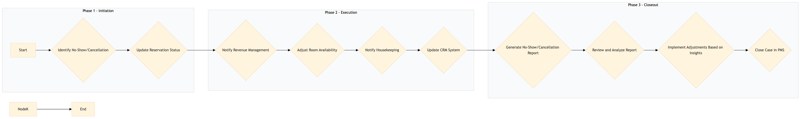

| Role | Steps |
|---|---|
| Front Desk Agent | 1.1 1.2 3.4 |
| Revenue Manager | 1.3 2.1 3.1 3.2 3.3 |
| Housekeeping Supervisor | 2.2 |
| Step | Name | Role | System | Input | Output | KPI | Dec? | Exc? | Pain Point / Risk |
|---|---|---|---|---|---|---|---|---|---|
| 1.1 | Identify No-Show/Cancellation | Front Desk Agent | Oracle OPERA Cloud | Reservation details | No-show/cancellation flagged in PMS | Less than 3 minutes to identify | Y | N | Manual entry errors |
| 1.2 | Update Reservation Status | Front Desk Agent | Oracle OPERA Cloud | No-show/cancellation flag | Updated reservation status in PMS | Less than 5 minutes to update | N | Y | System downtime |
| 1.3 | Notify Revenue Management | Revenue Manager | Oracle OPERA Cloud, IDeaS G3 RMS | Updated reservation status | Notification to Revenue Management team | Less than 10 minutes to notify | N | Y | Communication delays |
| 2.1 | Adjust Room Availability | Revenue Manager | Oracle OPERA Cloud, IDeaS G3 RMS | Reservation status update | Room availability adjusted in PMS and RMS | Less than 15 minutes to adjust | Y | N | Overbooking issues |
| 2.2 | Notify Housekeeping | Housekeeping Supervisor | Oracle OPERA Cloud, Knowcross HotSOS | Room availability update | Notification to housekeeping team | Less than 5 minutes to notify | N | Y | Inaccurate room status updates |
| 2.3 | Update CRM System | Customer Relationship Manager | Marriott Bonvoy CRM | Guest information | Updated guest record in CRM | Less than 10 minutes to update | N | Y | Data synchronization issues |
| 3.1 | Generate No-Show/Cancellation Report | Revenue Manager | Oracle OPERA Cloud, IDeaS G3 RMS | No-show/cancellation data | Daily no-show/cancellation report | Less than 20 minutes to generate | N | Y | Complex reporting tools |
| 3.2 | Review and Analyze Report | Revenue Manager | Microsoft Power BI | No-show/cancellation report | Actionable insights from report | Less than 30 minutes to review | Y | N | Insufficient data analysis skills |
| 3.3 | Implement Adjustments Based on Insights | Revenue Manager | Oracle OPERA Cloud, IDeaS G3 RMS | Actionable insights | Adjusted pricing and promotions | Less than 1 hour to implement | N | Y | Resistance to change |
| 3.4 | Close Case in PMS | Front Desk Agent | Oracle OPERA Cloud | Final case details | Closed no-show/cancellation case in PMS | Less than 5 minutes to close | N | Y | Lack of documentation |
This process outlines how a Marriott full-service hotel handles no-shows and cancellations, ensuring guest satisfaction and efficient resource management.